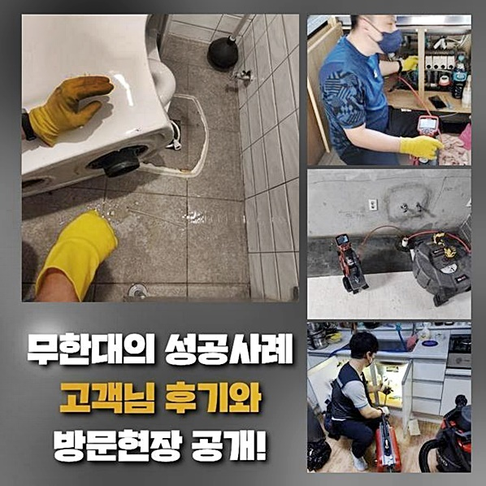
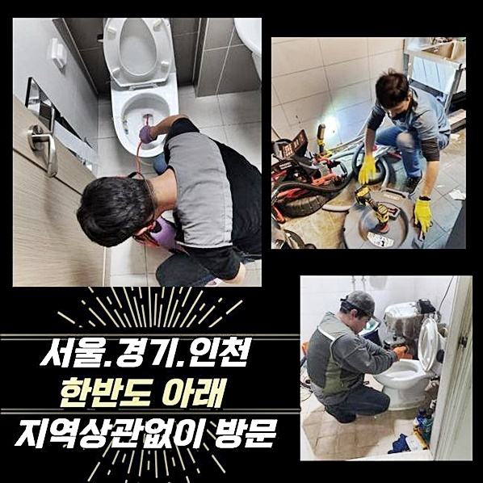
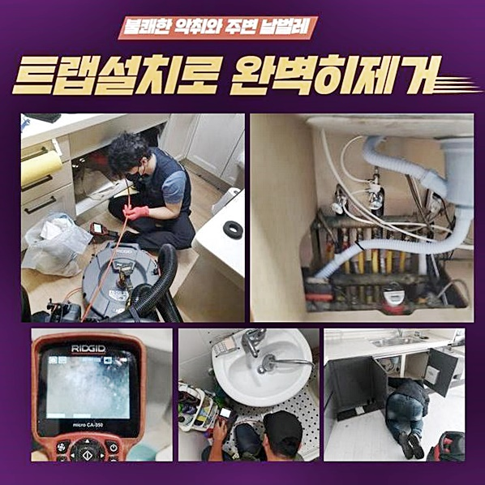
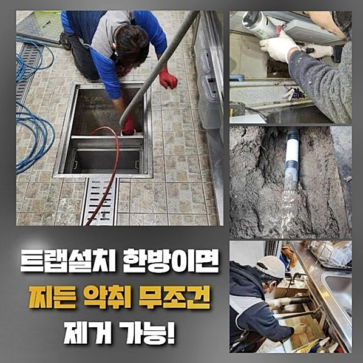
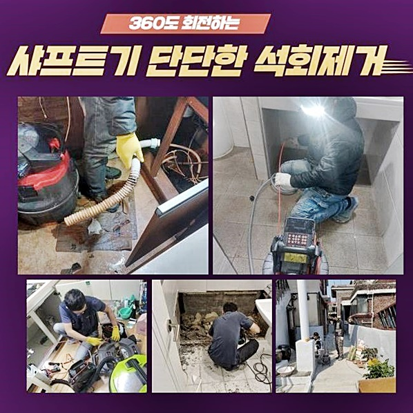
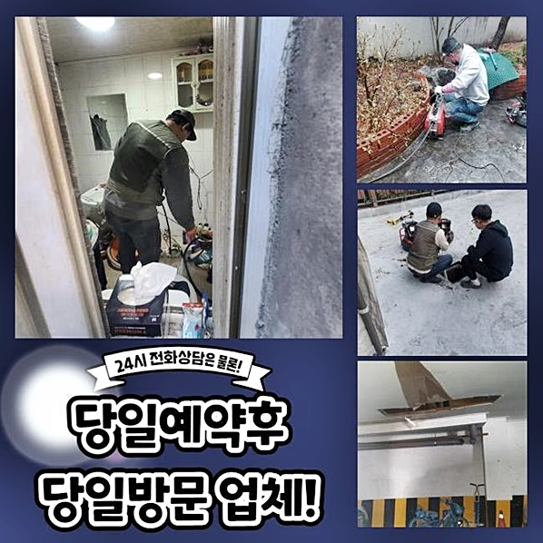

🏠 부천 소사동오수관막힘 약대동 횡주관청소 배관설비공사
용인 변기막힘 전문 시공 후기

📋 작업 개요
- 위치: 용인
- 서비스 유형: 변기막힘, 하수구막힘, 배관막힘, 역류해결, 배관청소, 고압세척, 설비공사
- 작업 일시: 2024. 9. 9. 18:02
- 업체명: 하수구수사대 (010-5615-2118)
🔍 문제 상황
부천 소사동오수관막힘 약대동 횡주관청소 배관설비공사
주거지에서 하수시설들이 솟구치는 문제들이 야기되었다는 의뢰를 하시어 곧장 내방했어요
집수시설이라던지 배수구 등에 여러 증세가 불거지면 다양한 측면에서 피해들을 입게될 여지가 있어서 저희들은 불편이 확산되는걸 예방하기위해서 당일출동을 바탕하여 신속히 찾아뵙고있어요
이제부터는 달려갔던 한 고객님의 사례로 배관고장이 생겨났을 때 주로 보이는 현상들과 원인제거 등의 절차들을 개괄적으로 일러드릴게요
도착하고서 증상의 상황들을 체크하니 꾸준히 청소하는것이 바로 잡히질 못해 이미 결함들이 커져버린 현상이 발발했음을 알게 되었어요
더군다나 막히는것을 연유로 역류문제까지 줄지어 발발하여 수도 사용 자체를 할수가 없는 까닭에 피해상황들을 토로하셨어요
쉽게 해결될 통수 오류의 경우들이라면 수월한 작업으로 증상들을 완화시키겠지만 그 시기들을 지키지 못할땐 범위들이 확대되며 작업의 사이즈도 증가하죠
이러한 문제들이 발생되는 원인들은 안에 축적된 오염물을 제일 먼저 생각하죠

🔎 원인 분석
💡 전문가 진단: 정밀 진단 장비를 사용하여 슬러지의 고착 여부를 판명하고 타격/세척 작업을 실시했습니다.
배수관의 경우 배수진행 과정에 꼭 필요한 시설이며 지면에 설치해주며 일상을 지속시키는 과정에 있어서 어려움없이 통수를 진행시키게끔 하는것입니다
하수도의 경우 하수도의 경우 여러가지의 기능을 맡고있고 주방등에서 사용되는 하수가 해당 설비를 거쳐 빠져나가는데 수도사용의 과정들에 불거진 불순물들이 배출되며 막히게 되는 문제들을 일으키게 되는거죠
오수관들의 문제들도 변기로 흘러들어간 이물질들이 자리를 잡는 바람에 생기게되요
통수들이 제대로 이뤄지지않아 여러 부위에 정체 문제들이 생겨난 등 화장실 내부에서 심각한 냄새가 불편을 가중시키면 문제들이 생겼다는 사안이라는 걸 아신 후에
조속히 전문업체와 그 까닭을 파악해보고 안정적인 해결책으로 청소를 이어가야 하겠습니다
주변의 현장을 보았더니 관로들의 심층부에서부터 이물질들이 누적된걸 이유들로 문제들이 생겨난 것으로 판단했습니다
그러나 통수불가 상태는 다양한 원인들로 야기되는 경우도 존재하므로 내시경기기를 삽입해 어디에서 이물이 많은지 오차없이 밝혀내어 청소하는게 올바른 방법이겠습니다
내시경장비엔 화면과 연결되있기때문에 문제 양상을 조속히 살필 수 있고 증상의 스팟과 이물의 형상들도 파악할 수 있으므로 방향들을 수립하는것에 도움이 됩니다

🔧 작업 과정
내시경장치를 통하여 구석구석 점검해봤더니 예측한대로 배수관과 집수시설에 상당량의 이물질들이 누적된걸 보았습니다
덧붙여 배관 연결부위마다 달라붙은 잔해의 현장일 시 깊은곳에서부터 산패가 발생되었을 정도로 엉망인 모습이였어요
배수장애는 전동스프링기나 샤프트기기를 통해서 고착물을 제거시켜 간소하게 풀어지는 현장도 있겠지만 오늘과같이 이리저리 잔해가 축적되어 있을 경우 고압노즐분사 방식들로 기름때를 제거시키는것이 안정적인 작업이라 할 수 있겠습니다
고압수분사는 막힘오류를 타파시키는데 좋은 결과를 보이지만 특정 현장의 경우 금액이 걱정된다는 걱정으로 시도하지 않는 사례들을 자주 보았습니다
전문적인 기기와 기술들이 갖춰져 있어야 하기에 평이한 장비들을 운용하는거보단 일정부분 금액이 생기는 것은 맞으나
배수오류가 발생되었을 때 계속해서 장치를 투입하는 것보다는 고압노즐분사를 진행시키는게 배관청소를 할 때 신속한 단계에요
그렇기에 고압수청소를 진행함이 어떻냐는 전문진의 말을 들었다면 꾸준한 증세들을 걷어내기위해 받아보는걸 권장드립니다
배수가 안되는 문제들을 해결하도록하는 청소는 컨디션과 같은 요소들에 있어 플랜들은 차이가나지만 대부분 집수설비에 노즐들을 삽입해주며 물빠짐의 방향을 거슬러올라가며 세척합니다
외부하수구로부터 작업들을 진행해주는건 하수라인에 존재하는 잔해를 확실하게 청소해주는것이므로 청소구간을 조금씩 넓혀가면 하수구들을 처음의 모습과 동일하게 만들어줍니다
그러나 하수도는 기능적 차이라던가 위치 특성에 비롯되어 재질들이 차이가 날 수 있고 사용한도가 장기적으로 흘러가면 내구성들이 떨어지는데요
배수관의 특성을 생각하지 않은 상태로 위험요소를 제거하지않은 해결책으로서 진행한다면 손상들을 야기시키니 작업을 이행하기 이전에 배수관의 위치를 파악하고 그 차이를 두어 적재적소 맞는 분사를 가해주는게 필요하죠
경력들을 응용하는 저희가 적당한 압들을 가해주며 꾸준한 고압세척들을 진행시켰더니 벽면에 흡착된 오염물을 확실하게 없앴어요


✅ 작업 완료
워낙 잔해물이 축적되었던 문제가 특히 심하여 솟구칠 징조까지 보이는 상황이였지만 다행스럽게도 고객께서 빨리 세척들을 요청해 주셔서 심한 문제로 불거지는것은 예방할 수 있었어요
세척들이 완료되면 내시경을 통하여 반복적인 점검들을 실시하며 점검 과정속에서 놓치고 있는 요소가 보여지면 기기를 추가로 삽입해 이물질들이 미량도 없게끔 오차없이 세척하니 안심하세요!
막히는 통수장애들이 발발했을 경우 조속하게 전문가들의 대응을 받아보시면 보다 안전히 문제들을 잠재울 수 있죠
저희업체는 고객분이 물사용으로 고민하는 일 없이 필요하실때 작업해드릴 준비를 하고 있으니 필요 시 편한 마음으로 전화주세요




⚠️ 하수구 배관 막힘 예방 및 관리 가이드
- ✅ 머리카락, 비닐, 물티슈 등 물에 분해되지 않는 이물질은 하수구 유입을 절대 금지해 주세요.
- ✅ 하수구 거름망을 씌우고 모여진 이물질은 주기적으로 쓰레기통에 바로 비워주셔야 합니다.
- ✅ 배관 노후가 심할 경우 이물질이 더 쉽게 걸리므로 주기적인 배관 세척(고압세척 등)을 권장합니다.
- ✅ 작업 후 1년 이내 재발 시 하수구수사대에서 무상 A/S 보증 서비스를 제공합니다.
💡 핵심 정리
- 확실한 장비 작업(내시경 점검 및 샤프트 스케일링)으로 원인을 뿌리 뽑습니다.
- 작업 후 1년 이내에 동일한 부위 재발 시 100% 무상 A/S 서비스를 보장합니다.
- 서울 · 경기 · 인천 전 지역에 24시간 언제든 긴급 출동할 수 있도록 항시 대기 중입니다.
❓ 자주 묻는 질문 (FAQ)
🚨 용인 변기막힘 문제로 고민이신가요?
정확한 원인 진단과 확실한 시공으로 재발 없는 해결을 약속드립니다.
24시간 긴급 출동 | 서울 · 경기 · 인천 전지역 | 1년 내 재발 시 무상 A/S